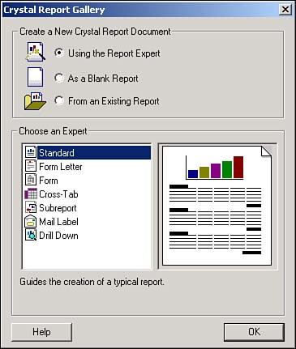
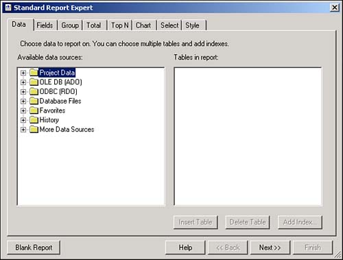
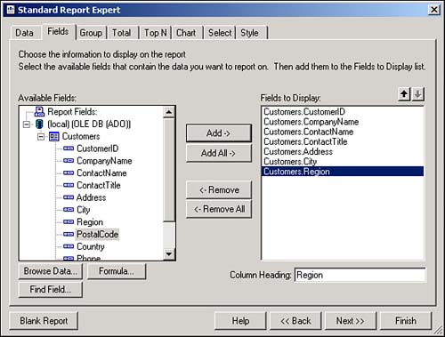
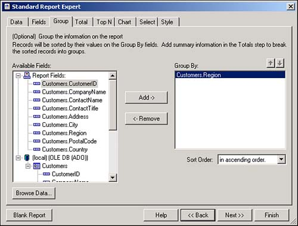
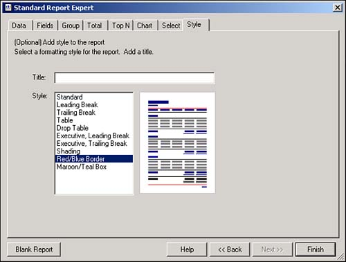
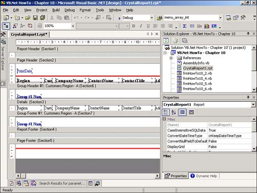
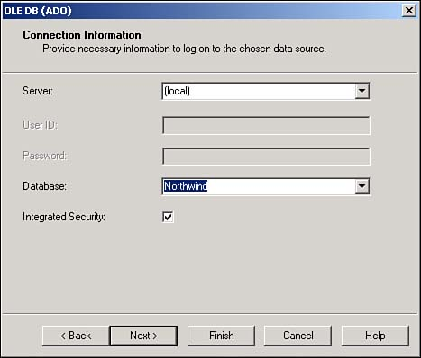
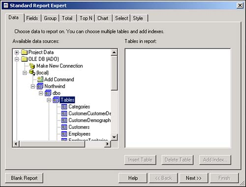
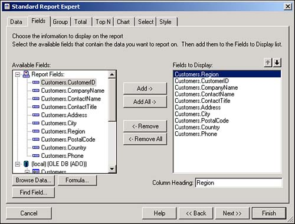
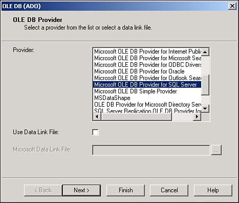

Note
If you name your reports with the prefix of rptReportName, you will be able to find all your reports in one location. |
I have created quite a few applications that allow the users to manipulate data in various ways. Now I need to create some reports so that I can present information for my clients and users. How do I create a report with Crystal Reports using one of these Experts I have heard about?
You can create a report and include it in your projects as needed.
After right-clicking on your project in the Solution Explorer, you need to choose Add New Item from the Add menu item. You then can pick Crystal Report from the templates and name it appropriately.
Note
If you name your reports with the prefix of rptReportName, you will be able to find all your reports in one location. |
After you have clicked the Open button on the dialog box, you are presented with the Crystal Report Gallery dialog box, shown here in Figure 10.1.

Crystal Reports includes wizards called Experts. These Experts assist you in performing certain tasks, from creating a whole report to creating an individual formula for a field. Experts are actually made up of other Experts. For instance, the Report Expert utilizes the Formula Expert within itself; however, you also can take advantage of the Formula Expert from within the Report Designer.
This How-To will discuss the Report Expert. This Expert creates various types of reports, listed in Table 10.1, in alphabetical order.
|
Report Type |
Description |
|---|---|
|
Crosstab |
Crosstab reports give you a cross-tabulation of your data, such as sales of customers by years. |
|
Drill Down |
This report is broken down into sections that start out as hidden, and then allow the user to "drill down" further into the information. An example of this would be a report that lists customers. When the user clicks on a particular customer, the invoices for that customer are displayed. Next, when you click on a particular invoice, its line items (or details) can be displayed. |
|
Form |
This report helps to create preprinted forms that use company logos and forms. Examples of this type include invoices. |
|
Form Letter |
Forms letters, such as late notices and sales letters, are created using this expert. |
|
Mail Labels |
This expert allows you to create mailing labels that are any size and any number of columns. |
|
Standard |
The standard report is just that-a standard list report that lists your information. It allows you to group and sort information, include formulas, and set an overall format for the report. This is the report that will be demonstrated for this How-To. |
|
SubReport |
This report helps you to create main reports that utilize subreports. An example is invoices for customers. |
If the Standard report type is highlighted, click OK, and the Standard Report Expert dialog opens, as shown in Figure 10.2.

Included on the Standard Report Wizard are the following tabs:
Data. Specify the database and table that you will be using for this report. You will have a number of different choices from datasets within the current application to OLEDB connections. For this chapter, you will be creating an OLEDB connection to the Northwind database.
Fields. After you have selected your record source, you then get a list of the fields from within your record source (see Figure 10.3).

In addition to creating formulas, you can view the data using the Browse Data option and locate fields using the Find Field option.
Group. This tab allows you to specify the group levels you want to include. An example you will see here groups the customer by region (see Figure 10.4).

Tip
If you want to have a field used for grouping, then you will most likely not want to have it listed in the detail section. It is important that you do not choose it back on the Field tab; just choose it from the Group tab. Of course, if you accidentally include it in the detail section after the report is created, you can always delete it later from the report while you're in the Design view. |
Total. This tab allows you to specify which fields you want to summarize in the group footers and report footer.
Top N. You can set how you want the groups sorted, based on the totals set by the last tab, Total.
Chart. Create a chart of your data.
Select. Filter which records you want to have reported based on field values. You will see how to do this at runtime in How-To 10.5.
Style. You can give your report a number of different looks. You also can specify the title of your report (see Figure 10.5.)

After you have finished specifying your report features, click Finish. Your report will now be displayed in Design view (see Figure 10.6).

For this How-To, you want to get to the point where you have the report created. The next How-To describes how to actually view the report on a Windows Form.
You can find all the examples in this chapter in the Solution called Visual Basic .NET-Chapter 10 on the Web site.
Open the Visual Basic .NET-Chapter 10 solution. In the Solution Explorer, you see the report rptHowTo10_3.rpt. You then see a report that looks similar to the one in Figure 10.7.
Right-click on your project in the Solution Explorer, and choose Add New Item menu item from the Add menu item. Type a name for the report in the Name field, and click Open. The Crystal Report Gallery dialog box opens.
Leaving the defaults as they are, which is to use the Report Export and create a Standard report, click the OK button. You are taken to the Report Expert, with the Data tab displayed.
Double-click on the OLE DB (ADO) node in the Available Data Sources tree if you haven't chosen a data source before. The OLE DB (ADO) dialog box opens the option and asks you to choose an OLE DB provider. Choose Microsoft OLE DB Data Provider for SQL Server (see Figure 10.7) and click Next.
You are requested to enter connection information. For this page, type (Local) for the server, check Integrated Security, and type Northwind for the database (see Figure 10.8). Click Finish. Your Available Data Sources will now include (Local) under the OLE DB (ADO) node and Northwind under the local connection.

Expand the tree under Northwind to get to the first DBO, and then expand Tables. You then see the tables listed, including the Customers table. Highlight the Customers table, and click Insert Table. The table is displayed in the Tables in Report list (see Figure 10.9.) Click Next.

From the Fields tab, add the fields as displayed in Figure 10.10, and then click Next. You are taken to the Group tab.

Under the (local) node in the field tree, select Region from the Customers table, and click Add. Now you're ready to choose the style. Skip over to the Style tab by clicking on it directly.
Type My First Report for the title of the report, and then select Red/Blue Border for the style. Click Finish, and your report is displayed in Design mode.

The next How-To explains how to display your report.
You can modify your report by both clicking on controls and changing them in the Design mode, or right-clicking on one of the section bodies (not the gray bands), and choosing Report, Report Expert. This takes you right back into the Report Expert to let you make some tweaks when you have to.
You will also see the various tabs of the Report Expert as you right-click and choose some of the individual Experts to give you a hand. Try these right now. Take some time to right-click on some of the section bodies, and select some of the choices from the pop-up menu to play with, such as Report, then Style Expert.